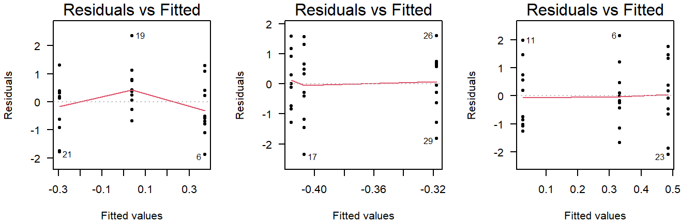

Tutorial 2 Chi-Squared Test
A test for comparing observed to expected frequencies
Summary
- Read the data into R ;
- Visualize the data;
- Choose an appropriate \(\chi^2\)-test ;
- Report a conclusion;
- Incorporating this in scientific literature.
You can download the tutorial here and the required data set here.
2.1 Read the Data into R
Chi-squared tests usually involve a limited number of variables (otherwise you should probably use a binomial GLM instead). We can therefore just enter the data manually:
# Example 1: A vector of observed frequencies per category
Observed <- c(rose = 33, tulip = 6, dandelion = 11)
# Example 2: A contingency table
ConTable <- data.frame(
men = c(41, 68),
women = c(33, 82)
)
rownames(ConTable) <- c("non-smoking", "smoking")I have a tidy data file
| smoking | sex |
|---|---|
| FALSE | man |
| FALSE | man |
| FALSE | man |
| FALSE | man |
| FALSE | man |
| … | … |
If you have data in tidy format, you can easily generate a contingency table with the function table:
Details
- Save the data in a folder;
- Open RStudio and create a new R markdown file; (File > New File > R Markdown)
- Save your R markdown file to the same location as the data;
- Set working directory to source file location. (Session > Set Working Directory > To Source File Location)
# Read the data
DF <- read.csv("binary-data.csv")
# Convert tidy data to a contingency table
ConTable <- table(DF)
# Print the object to confirm it worked
print(ConTable)## sex
## smoking man woman
## FALSE 41 33
## TRUE 68 82Common mistakes
- Remember to include the file extension (e.g., “binary-data.csv”) when typing the file name.
- You cannot read Excel files (.xls, .xlsx) with this function. Instead, follow the guide here, or save your data as CSV.
- Don’t open the CSV file with Excel. You don’t need Excel or Google Sheets or any other program besides R and RStudio. If you have saved your data as CSV, you can close Excel.
2.2 Visualize the Data
If your data can be summarized as a \(2 \times 2\) contingency table, I recommend just including it as is:
| men | women | |
|---|---|---|
| non-smoking | 41 | 33 |
| smoking | 68 | 82 |
Plotting categorical data
There are several options for plotting categorical data. In summary:
- Marginal bar charts cannot show combinations of variables;
- Grouped bar charts can show combinations of variables;
- A mosaic plot is an alternative to a grouped bar chart.
Marginal bar chart
A marginal bar chart shows you the totals of one variable, summed over all other variables. They are what you would find at the margins of a contingency table if you were to include the totals:
barplot(rowSums(ConTable))
barplot(colSums(ConTable))Figure 2.1: Marginal bar chart of smoking (A) and sex (B).
While this provides easy insight into the marginal distribution of smoking (A) and sex (B), it cannot show you combinations of the two, and is therefore not always informative.
Of course, if your data only contains counts of a single variable, then a marginal bar chart is appropriate:
barplot(Observed, col = c("red", "orange", "yellow"))
Grouped bar chart
A grouped bar chart shows the frequencies of one variable, split by another:
barplot(as.matrix(ConTable), beside = TRUE, xlim = c(1, 8), col = 3:4)
legend("topright", legend = rownames(ConTable), pch = 15, col = 3:4)
Figure 2.2: Grouped bar chart of smoking and sex.
A grouped bar chart has the advantage of showing not the marginals, but combinations of smoking and sex in a single figure.
Improving your plot
Some basic adjustments that improve bar charts:
- Add an informative caption;
- Keep the numbers on the axes horizontal where possible;
- Remove unnecessary plot elements, like boxes around the bars;
- Never start a bar chart at a different height than zero. This is fine for just about every other type of plot, but in a bar chart, it warps the perceived difference in relative height.
The changes to the code I made below can all be found in the help pages ?barplot and ?par. I am also a big fan of the eaxis function from the package sfsmisc. The caption is added as a chunk option (i.e., ```{r, fig.cap = "..."}).
# Change the margins (bottom, left, top, right)
par(mar = c(2.5, 4, 0, 0) + 0.1)
# barplot() expects a matrix. We will need this object several times:
M <- as.matrix(ConTable)
# Color-blind friendly colors picked from: https://colorbrewer2.org/
cols <- c("#1f78b4", "#b2df8a")
# Create the coordinate system
barplot(M, beside = TRUE, xlim = c(0, 9), ylim = c(0, 90), axes = FALSE,
col = cols, border = NA, xaxs = "i", ylab = "Frequency")
# Add y-axis
eaxis(2)
# Add a lightgrey background
polygon(x = c(-1, 7, 7, -1, -1), y = c(0, 0, 100, 100, 0),
col = "grey95", border = NA)
# Add a simple grid
abline(h = seq(0, 100, 10), col = "white", lwd = 1)
abline(h = seq(0, 100, 20), col = "white", lwd = 1.5)
# Redraw the barplot on top
barplot(M, beside = TRUE, xlim = c(1, 8), axes = FALSE, add = TRUE,
col = cols, border = NA)
# Create a legend
legend("topright", legend = rownames(M), pch = 15, col = cols, bty = "n")
# Restore the default margins for subsequent plots
par(mar = c(5, 4, 4, 3) + 0.1)Figure 2.3: Grouped bar chart of smoking and sex.
From the plot we can conclude there are more smokers than non-smokers. Smoking appears slightly more common in females.
Mosaic plot
A mosaic plot is similar to a stacked bar chart (groups pasted on top of each other). However, in a mosaic plot, both the height and the width of the bars is proportional to the frequency of that group:
mosaicplot(ConTable, main = "", col = 3:4)Figure 2.4: Mosaic plot of smoking and sex shows smoking is relatively, slightly more common in women.
Mosaic plots are not very commonly used, but can provide an alternative to bar charts to summarize categorical data effectively, especially with an appropriate color scheme to distinguish between categories.
2.3 Conduct a Chi-Squared Test
If you have a single set of observed values
To compare a single set of observed values to their expected proportions:
# Proportions in which the flowers were planted
expected <- c(1/2, 1/4, 1/4)
# Did the flowers sprout in a different ratio than I planted them?
chisq.test(Observed, p = expected)##
## Chi-squared test for given probabilities
##
## data: Observed
## X-squared = 6.12, df = 2, p-value = 0.04689If you have a contingency table
To conduct a \(\chi^2\)-test for independence:
chisq.test(ConTable)##
## Pearson's Chi-squared test with Yates' continuity correction
##
## data: ConTable
## X-squared = 1.6293, df = 1, p-value = 0.2018I received a warning
If you receive the following warning:
Warning message:
In chisq.test(Observed, p = expected) :
Chi-squared approximation may be incorrectThat means at least one of the expected values is less than 5. The solution is to use Monte Carlo simulation to estimate the \(p\)-value (for a vector of observed frequencies) use an exact test (for contingency tables):
# Monte Carlo (for a vector of observed frequencies)
chisq.test(Observed, simulate.p.value = TRUE)
# Exact test (for contingency tables)
fisher.test(ConTable)2.4 Correctly Phrase the Results
For a vector of observed frequencies:
If the \(p\)-value is less than the chosen level of significance
(This is the case in the flower example.)
Examples of precise language:
- Flowers species were counted in a ratio significantly different from the \(2:1:1\) ratio in which they were planted (\(\chi^2 = 24.8\), \(p = 4.20 \cdot 10^{-6}\));
- We observed significantly different proportions of flower species than expected (\(\chi^2 = 24.8\), \(p = 4.20 \cdot 10^{-6}\)).
Examples of incorrect, incomplete, or imprecise language:
- The alternative hypothesis was true // The null-hypothesis was false;
- The difference was significant (\(p < 0.05\));
- Flowers species sprout in a different ratio than the ratio in which they are planted.
Why paste tense?
The results of a single experiment, no matter how convincing, can never prove something to be true. The results were observed, and in this one experiment, A was better than B.
Use present tense only for statements that have been demonstrated repeatedly, are generally agreed upon, or are easily observable, e.g.:
- Smoking causes cancer;
- Current climate-change is mainly caused by human activities;
- Most people use smartphones nowadays.
If the \(p\)-value is greater than the chosen level of significance
Examples of precise language:
- Counts of flowers species did not differ significantly from the \(2:1:1\) ratio in which they were planted (\(\chi^2 = \dots\), \(p = \dots\));
- There is insufficient evidence to conclude a difference from a \(2:1:1\) ratio (\(\chi^2 = \dots\), \(p = \dots\));
- There was a trend towards more rose and fewer tulips than expected under a \(2:1:1\) ratio, but this difference was not significant (\(\chi^2 = \dots\), \(p = \dots\)).
Examples of incorrect, incomplete, or imprecise language:
- Planting and sprouting ratios were equal // The \(2:1:1\) ratio was correct;
- There was no difference (\(p < 0.05\));
- We accept the null-hypothesis.
Why can’t I say I accepted the null-hypothesis?
This is imprecise language because it distorts the order of null-hypothesis significance testing. Every tests starts with pretending the null-hypothesis is true, and then considering how rare a result this would be. You did not accept the null-hypothesis because of the \(p\)-value, but rather, you started by taking on the null-hypothesis to even compute that \(p\)-value.
For contingency tables:
If the \(p\)-value is less than the chosen level of significance
Examples of precise language:
- Smoking behavior differed significantly by sex (\(\chi^2 = \dots\), \(p = \dots\));
- Females were proportionally significantly more likely to be smokers (\(\chi^2 = \dots\), \(p = \dots\)).
- Smoking behavior and sex were significantly dependent (\(\chi^2 = \dots\), \(p = \dots\)).
Examples of incorrect, incomplete, or imprecise language:
- The alternative hypothesis was true // The null-hypothesis was false;
- The difference was significant (\(p < 0.05\));
- Sex and smoking are independent of each other.
Why paste tense?
The results of a single experiment, no matter how convincing, can never prove something to be true. The results were observed, and in this one experiment, A was better than B.
Use present tense only for statements that have been demonstrated repeatedly, are generally agreed upon, or are easily observable, e.g.:
- Smoking causes cancer;
- Current climate-change is mainly caused by human activities;
- Most people use smartphones nowadays.
If the \(p\)-value is greater than the chosen level of significance
Examples of precise language:
- Smoking behavior did not differ significantly by sex (\(\chi^2 = \dots\), \(p = \dots\));
- There is insufficient evidence to conclude a difference in smoking behavior between men and women (\(\chi^2 = \dots\), \(p = \dots\));
- Smoking behavior and sex did not depend significantly on each other (\(\chi^2\), \(p\)).
Examples of incorrect, incomplete, or imprecise language:
- Smoking behavior was equal for men and women // Sex and smoking were independent;
- There was no difference (\(p < 0.05\));
- We accept the null-hypothesis.
Why can’t I say I accepted the null-hypothesis?
This is imprecise language because it distorts the order of null-hypothesis significance testing. Every tests starts with pretending the null-hypothesis is true, and then considering how rare a result this would be. You did not accept the null-hypothesis because of the \(p\)-value, but rather, you started by taking on the null-hypothesis to even compute that \(p\)-value.
2.5 Incorporating This in a Paper
Here you can find examples of how to justify the methods used, explain the results found and write a discussion. This is meant to show you what belongs where, and what level of detail is common in scientific literature.
Remember to use your own words—paraphrase to avoid plagiarism.
Methods
(In this section, you should describe the data collection and analysis to an extent that a fellow expert could reproduce your study.)
All 226 employees at Example company were inquired about their sex and smoking behavior in November 2022. A total of \(n = 224\) employees responded.
All statistical analyses were conducted in R, version 4.2.1, using the RStudio interface.1,2 Observed and expected frequencies were compared with a Pearson’s chi-squared test.
Note:
- Check your R version number with
version; - Justify the type of test used; (If you use a \(\chi^2\)-test, all expected (not observed) counts should be greater than 5.)
- You should cite any packages used to perform analyses, generate tables or figures that made it into the paper, e.g.;
- Figures were created with the
ggplot2package.5 (Not the case in the tutorial.)
- Figures were created with the
- You should not cite packages used only internally, e.g.:
- We used
readxlto enter the data in R.4
- We used
- It is important to mention adequately how the data was collected. For survey research like that in the example, the respondence rate can have a large influence on the conclusions: What if smoking females are less likely to respond?
Results
(In this section you should mention the results without giving any interpretation yet.)
For general advice on phrasing, see: Correctly Phrase the Results. In this section, you should include your table and/or figure of the data and explain in brief what the outcome of the \(\chi^2\)-test was.
It is very common to see bar charts with significance stars, but the interpretation of these stars is not consistent and you should mention the actual, non-discretized \(p\)-value at least somewhere in the results.
Discussion
(In this section, you should not mention results, but the conclusions based on those results.)
For a vector of observed frequencies:
If the test was significant and the difference large enough to be biologically relevant
(This is the case in the flower example.)
- Roses appear to sprout more often, and tulips less often than dandelions, though more replicates of the experiment are necessary for a conclusive answer;
- Differences in seed resilience of roses, tulips and dandelions may cause them to sprout disproportional to their planting ratios.
- (Overclaiming) Roses are better at sprouting than tulips or dandelions.
- (Overgeneralizing) Thorned flowers appear to sprout more often than flowers without thorns.
If the test was insignificant or the difference too small to be biologically relevant:
- (If the study was sufficiently powerful) Despite a fairly large sample size, we were unable to demonstrate a difference in planting and sprouting ratios, suggesting these species are equally likely to sprout when planted.
- (If the study was underpowered) We were unable to demonstrate a difference in planting and sprouting ratios, though a multiple replications of the experiment in different fields may yield a more conclusive answer.
- (Appeal to ignorance) We have demonstrated there is no difference in planting and sprouting ratios.
Why can’t I conclude there is no difference?
This is an inherent limitation of the \(p\)-value. Under the null-hypothesis, any \(p\)-value is as likely as any other (uniformity). Therefore, even if the \(p\)-value is very large, this cannot be interpreted as evidence for the null-hypothesis.
For example, a \(p\)-value of \(0.20\) is just as common a result as \(0.80\) when the null-hypothesis is correct. The \(p\)-value can only be used as evidence against the null-hypothesis (when it is small).
If you want to perform a test to find out whether the null-hypothesis is correct, what you are looking for is called an equivalence test.
For contingency tables:
If the test was significant and the difference large enough to be biologically relevant
- Women may be more inclined to smoke at work, though more replicates of the experiment at different companies are necessary for a conclusive answer;
- Anti-smoking campaigns at Example company may have been relatively more effective at targeting men, though a longitudinal intervention study could provide a more conclusive answer.
- (Overclaiming) Anti-smoking campaigns at Example company have been more successful in targeting men.
- (Overgeneralizing) Men are less inclined to smoke at work.
If the test was insignificant or the difference too small to be biologically relevant:
(This is the case in the smoking example.)
- (If the study was sufficiently powerful) Smoking remains prevalent at Example company, irrespective of sex.
- (If the study was underpowered) We were unable to demonstrate a difference in smoking ratios of men and women at Example company.
- (Appeal to ignorance) We have demonstrated smoking and sex are independent at Example company.
Why can’t I conclude there is no difference?
This is an inherent limitation of the \(p\)-value. Under the null-hypothesis, any \(p\)-value is as likely as any other (uniformity). Therefore, even if the \(p\)-value is very large, this cannot be interpreted as evidence for the null-hypothesis.
For example, a \(p\)-value of \(0.20\) is just as common a result as \(0.80\) when the null-hypothesis is correct. The \(p\)-value can only be used as evidence against the null-hypothesis (when it is small).
If you want to perform a test to find out whether the null-hypothesis is correct, what you are looking for is called an equivalence test.
General note: Counts from a single location, work place, or petri dish are never convincing enough for strong conclusive remarks. It is better to have multiple replicates of the whole experiment (fields, companies, petri dishes) and analyze the results with, for instance, a binomial GLM.
Generating citations
Any packages used in analysis should be cited in the methods section. The citations used here can be easily obtained as follows (note that this requires the packages to be installed):
citation() # Use this to cite R
RStudio.Version() # Use this to cite RStudio
citation("ggplot2") # Use this to cite a package (here: ggplot2)You can add these entries to a reference manager (e.g., Zotero), or keep a BibTeX file yourself, as shown here.